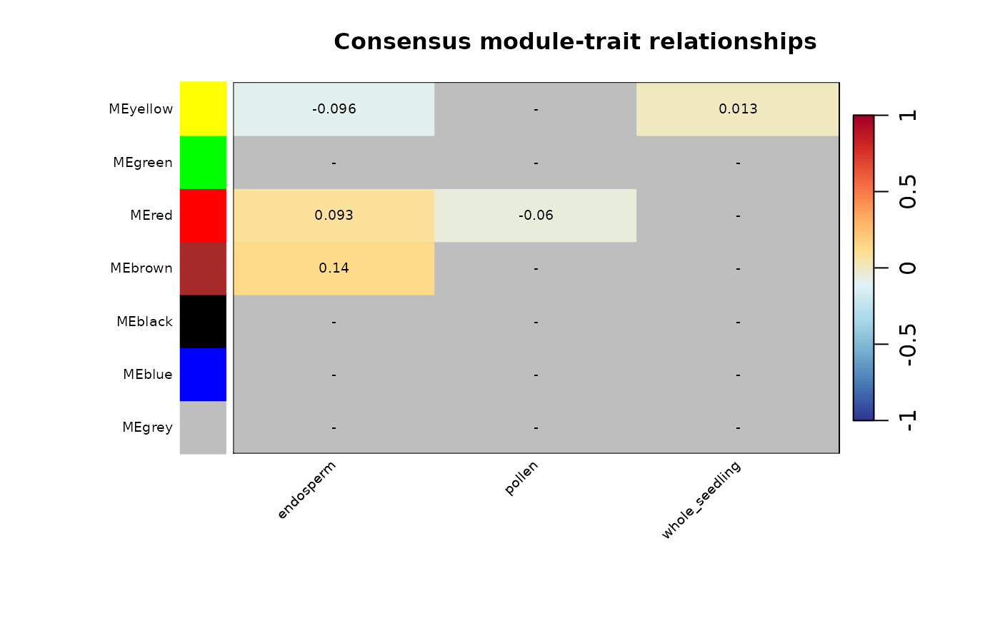

Correlate set-specific modules and consensus modules to sample information
Source:R/consensus_modules.R
consensus_trait_cor.RdCorrelate set-specific modules and consensus modules to sample information
Usage
consensus_trait_cor(
consensus,
cor_method = "spearman",
continuous_trait = FALSE,
palette = "RdYlBu",
cex.lab.x = 0.6,
cex.lab.y = 0.6,
cex.text = 0.6,
transpose = FALSE
)Arguments
- consensus
Consensus network returned by
consensus_modules.- cor_method
Correlation method to be used. One of 'spearman' or 'pearson'. Default is 'spearman'.
- continuous_trait
Logical indicating if trait is a continuous variable. Default is FALSE.
- palette
RColorBrewer's color palette to use. Default is "RdYlBu", a palette ranging from blue to red.
- cex.lab.x
Font size for x axis labels. Default: 0.6.
- cex.lab.y
Font size for y axis labels. Default: 0.6.
- cex.text
Font size for numbers inside matrix. Default: 0.6.
- transpose
Logical indicating whether to transpose the heatmap of not. Default is FALSE.
Details
Significance levels: 1 asterisk: significant at alpha = 0.05. 2 asterisks: significant at alpha = 0.01. 3 asterisks: significant at alpha = 0.001. no asterisk: not significant.
Examples
set.seed(12)
data(zma.se)
filt.zma <- filter_by_variance(zma.se, n=500)
zma.set1 <- filt.zma[, sample(colnames(filt.zma), size=20, replace=FALSE)]
zma.set2 <- filt.zma[, sample(colnames(filt.zma), size=20, replace=FALSE)]
list.sets <- list(zma.set1, zma.set2)
# SFT power previously identified with consensus_SFT_fit()
consensus <- consensus_modules(list.sets, power = c(11, 13),
cor_method = "pearson")
#> ..connectivity..
#> ..matrix multiplication (system BLAS)..
#> ..normalization..
#> ..done.
#> ..connectivity..
#> ..matrix multiplication (system BLAS)..
#> ..normalization..
#> ..done.
#> ..done.
#> multiSetMEs: Calculating module MEs.
#> Working on set 1 ...
#> Working on set 2 ...
consensus_trait <- consensus_trait_cor(consensus, cor_method = "pearson")
